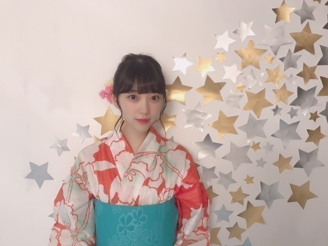

2018/0710Tueみえているもの
バースデーライブ
3日間無事完走いたしました！！！

久しぶりのこの3人！ ワタボコリ〜
久しぶりに日奈子と一緒にライブができて
なんていうんだろう
なんかね、嬉しかったです！
ツアーも楽しみ。
ショートヘアにしてから久しぶりのライブでしたが、
見つけやすかったという感想を友人からいただき
良かったなぁとo(^▽^)o
皆さんも、見つけられましたか？？

私はできる限り目を凝らして
タオルやうちわやサイリウムを
探しました(^-^)
嬉しかったです！
ステージからよく見えます！ありがとう！
ダンスパフォーマンスとか
新曲披露とか 2会場同時開催とか
自転車乗ったりとか
色んな試みをしました。
正直今回はリハーサルに参加できる日がほぼ無くて
不安と焦りもあったけど
自分なりに全力を尽くしました。
見に来てくださる皆さんの笑顔と
歓声が嬉しくて...
ツアーも楽しみにしとってね！
そして伊織とちはるさんは
最後のライブでした。
今まで本当にお疲れ様でした！
本番前、伊織とお話ししたときに
寂しいっていう気持ちを圧し殺しながら
楽しもうねって言ったんですけど
やっぱり凄く寂しくて。
でも伊織がこれからもあの笑顔で
楽しくしていてくれたら
それでいいって思いました！
写真集1番好きって言ってくれたの
めちゃくちゃ嬉しかった（ ｉ _ ｉ ）
大好きだよ〜伊織。
お互い頑張ろう！
卒業しても2人はずっとメンバーで、仲間です。
出会えてよかった！



昔から浴衣とかお着物が好きで
毎年浴衣は新調しています...
オレンジ x 白のこの浴衣
サイリウムカラーで帯は好きな水色で
お気に入りの浴衣♪
夏〜
暑さの中にもいろんな発見を探して
学びの多い
準備にふさわしい夏にしたいです！
変わりゆくものに追いつかないと
受け入れないと
変わらないと
だね。
ザンビ プロジェクト わくわく。
まだ秘密〜！
では(^-^)
2018/07/10 11:06
コメント(583)
ライブ三日間お疲れ様！
三日間とも行けたし最後の秩父宮は席近くてタオルに反応してくれて嬉しかったな〜
次は、幕張の握手、福岡2公演いくね！
体調第一でがんばって！
三日間とも行けたし最後の秩父宮は席近くてタオルに反応してくれて嬉しかったな〜
次は、幕張の握手、福岡2公演いくね！
体調第一でがんばって！
シンクロライブめちゃくちゃ楽しかった！ワタボコリも大好きで聴きたかったけど、あの教室が生で見られてすっごく嬉しかった(;_;)
とにかくショートの堀ちゃん可愛かったし、たしかに見つけやすかった！笑
最高に楽しいライブをありがとう ツアーも行くので今から楽しみです（*＾-＾*）
ツアーも行くので今から楽しみです（*＾-＾*）
とにかくショートの堀ちゃん可愛かったし、たしかに見つけやすかった！笑
最高に楽しいライブをありがとう
みおなブログ更新ありがと！
バスラ完走おつかれさまー！
次は全ツ完走だねー！
バスラ完走おつかれさまー！
次は全ツ完走だねー！
未央奈！
バスラお疲れ様～。
秩父宮に3日間連続でいたよ！
最終日はアリーナで、46時間テレビの推しタオルを掲げてました。
勿論サイリウムは白橙！
ショートカットの未央奈、探しやすかったです！
ただ、アンコールであんまり秩父宮に来てくれなかったのが寂しかったですが、、、
それでも、今回初めて乃木坂の本格的なライブに行けたんですが、ライブって超楽しいなってなりました！
全国ツアーも割と行くので楽しみです。
それとちーちゃんといおりの最後の勇姿も見ることができたので、本当に内容の濃いライブだったなって思ってます。
ありがとう！
浴衣未央奈、めっちゃかわいい！
また更新楽しみにしてます！
バスラお疲れ様～。
秩父宮に3日間連続でいたよ！
最終日はアリーナで、46時間テレビの推しタオルを掲げてました。
勿論サイリウムは白橙！
ショートカットの未央奈、探しやすかったです！
ただ、アンコールであんまり秩父宮に来てくれなかったのが寂しかったですが、、、
それでも、今回初めて乃木坂の本格的なライブに行けたんですが、ライブって超楽しいなってなりました！
全国ツアーも割と行くので楽しみです。
それとちーちゃんといおりの最後の勇姿も見ることができたので、本当に内容の濃いライブだったなって思ってます。
ありがとう！
浴衣未央奈、めっちゃかわいい！
また更新楽しみにしてます！
バスラ三日間お疲れ様です。自分は三日間とも参戦できてとても楽しかったです。千秋楽では秩父宮のアリーナで前から2列目で堀さんを間近で見ることができ良き思い出となりました。ありがとうございました。
バースデーライブお疲れ様でした！
自分は3日間参戦しました！！
もう一言で言うのはもったいないですが、
本当に最高でした！！！！
1日目と3日目はステージバック席でした！
ステージバック席からも普通にステージ見れて
めちゃくちゃ楽しかったです
2日目は神宮のアリーナのセンターステージのすぐ近くで見れて、メンバーの顔1人1人が肉眼ではっきり見れました！
堀さんのことは始まってすぐに見つけましたよ！
もう可愛すぎてコールするのも忘れてずっと堀さん見てタオルあげたりズッキュンしてって書いたうちわ振ったりしてました（笑）
やっぱり堀さんのショートカットの可愛さに勝てるものは何もないと確信しました
2日目の神宮のセンターステージの近くで
ズッキュンしてって書いたうちわ振ってたの見えましたか？笑
浴衣姿の堀さん可愛すぎますって…
生写真買ったんですけど、堀さんの浴衣姿の写真ゲットしました！！ちょー嬉しかったです！！
ザンビめっちゃおもしろそうですね！
ホラー大好きなので楽しみです！
堀さんもザンビみたいな雰囲気の大好きですよね？
楽しみにしてますね！！
堀さん大好きです
自分は3日間参戦しました！！
もう一言で言うのはもったいないですが、
本当に最高でした！！！！
1日目と3日目はステージバック席でした！
ステージバック席からも普通にステージ見れて
めちゃくちゃ楽しかったです
2日目は神宮のアリーナのセンターステージのすぐ近くで見れて、メンバーの顔1人1人が肉眼ではっきり見れました！
堀さんのことは始まってすぐに見つけましたよ！
もう可愛すぎてコールするのも忘れてずっと堀さん見てタオルあげたりズッキュンしてって書いたうちわ振ったりしてました（笑）
やっぱり堀さんのショートカットの可愛さに勝てるものは何もないと確信しました
2日目の神宮のセンターステージの近くで
ズッキュンしてって書いたうちわ振ってたの見えましたか？笑
浴衣姿の堀さん可愛すぎますって…
生写真買ったんですけど、堀さんの浴衣姿の写真ゲットしました！！ちょー嬉しかったです！！
ザンビめっちゃおもしろそうですね！
ホラー大好きなので楽しみです！
堀さんもザンビみたいな雰囲気の大好きですよね？
楽しみにしてますね！！
堀さん大好きです
未央奈ちゃん明治神宮ライブお疲れ様でした。
これから暑いけど水分補給して頑張ってねぇ。
これから暑いけど水分補給して頑張ってねぇ。
バスラはチケット当たらなかったから行けなかったけど大阪当たったので行きます。
楽しみ楽しみ！
岐阜のじいさんの名の通り岐阜に住んでいるのですが今度の大雨うちは大丈夫だったけどみおなちゃんの実家は大丈夫ですか？
かなり降りました❗️
お身体にご自愛してください！
大阪で待ってます❗️
楽しみ楽しみ！
岐阜のじいさんの名の通り岐阜に住んでいるのですが今度の大雨うちは大丈夫だったけどみおなちゃんの実家は大丈夫ですか？
かなり降りました❗️
お身体にご自愛してください！
大阪で待ってます❗️
みおな〜(*^▽^*)バスラ3日間お疲れ様！あのLIVEに3日間も参戦できて本当に幸せでしたヽ(´▽｀)/
久々にきいちゃんとらんぜのワタボコリ3ショット(ToT)マジ泣きそう(´༎ຶོρ༎ຶོ`)良かったぁ(´༎ຶོρ༎ຶོ`)正直もう見れないのかなぁって思ってたから(ToT)
全ツもひとめぼれスタジアム宮城2DAYS参戦しますので1年ぶりに宮城でのワタボコリを生で見れる事を願って9月まで頑張りま〜〜す(//∇//)
久々にきいちゃんとらんぜのワタボコリ3ショット(ToT)マジ泣きそう(´༎ຶོρ༎ຶོ`)良かったぁ(´༎ຶོρ༎ຶོ`)正直もう見れないのかなぁって思ってたから(ToT)
全ツもひとめぼれスタジアム宮城2DAYS参戦しますので1年ぶりに宮城でのワタボコリを生で見れる事を願って9月まで頑張りま〜〜す(//∇//)
神宮3日目行きました！
ライブ初参加でしたが最高に楽しかったです(^^)
秩父宮と行ったり来たり大変でしたね…お疲れさまです。
また行きます！！
ライブ初参加でしたが最高に楽しかったです(^^)
秩父宮と行ったり来たり大変でしたね…お疲れさまです。
また行きます！！
ブログありがと！
2日目行きました！腕捲りしてたけど
気付きました？アリーナで未央奈見てたよ！
体調気をつけて！
大好きだー！
2日目行きました！腕捲りしてたけど
気付きました？アリーナで未央奈見てたよ！
体調気をつけて！
大好きだー！
夢のような３日間、ありがとう。
きぃちゃんの元気な姿が見られて嬉しかった
できる事からやっていくって言ったのが、
ほんと安心しました。
ファンのみんなの優しさで支えられたらいい
なぁ。
みおなちゃんはよく見えたよ。前髪気にしな
がらサイドステージをポコポコ走ってるのが
可愛かった。
本当にいろいろあったバスラだったね。
THREEFOLD CHOICEもあの教室もあらかじ
め語られるロマンスもみんなよかった。
ちーちゃん、いおりちゃんも爽やかに明るく
終われてとってもよかった。
夏のお別れって感じ。
ザンビプロジェクトは楽しみだね。
堀ザンビにはうってつけの企画だね。
きぃちゃんの元気な姿が見られて嬉しかった
できる事からやっていくって言ったのが、
ほんと安心しました。
ファンのみんなの優しさで支えられたらいい
なぁ。
みおなちゃんはよく見えたよ。前髪気にしな
がらサイドステージをポコポコ走ってるのが
可愛かった。
本当にいろいろあったバスラだったね。
THREEFOLD CHOICEもあの教室もあらかじ
め語られるロマンスもみんなよかった。
ちーちゃん、いおりちゃんも爽やかに明るく
終われてとってもよかった。
夏のお別れって感じ。
ザンビプロジェクトは楽しみだね。
堀ザンビにはうってつけの企画だね。
バスラ3日目あの教室よかったよ〜〜(*ﾟ▽ﾟ*)
あしゅ未央奈いい感じでした⁉︎
終始楽しいライブありがとう⁉︎
次は大阪で会いましょう⁉︎
そんな堀未央奈ちゃん
ブログ更新ありがとう⁉︎
久しぶりの3人でのライブも
いいよね⁉︎
きいちゃんに蘭世、未央奈ちゃん
元気もらいました。
色んなパフォーマンスや仕掛け
トリプルアンコール楽しめたよ⁉︎
あと新曲のジコチューも楽しみ〜
暑い日が続くけど体に気をつけてね⁉︎
浴衣姿が可愛いよ⁉︎
サイリウムカラーの浴衣姿に
水色の帯良く似合っているね⁉︎
今年は色んな浴衣姿の未央奈ちゃん
みれるかな⁇
伊織ちゃんとちーちゃんラスト
ライブとても輝いていたね⁉︎
ザンビプロジェクト楽しみだね⁉︎
特にホラー好きの未央奈ちゃんには
お似合いの仕事だね⁉︎
続編に期待ですねー⁉︎
今日も暑いけどファイト〜
あしゅ未央奈いい感じでした⁉︎
終始楽しいライブありがとう⁉︎
次は大阪で会いましょう⁉︎
そんな堀未央奈ちゃん
ブログ更新ありがとう⁉︎
久しぶりの3人でのライブも
いいよね⁉︎
きいちゃんに蘭世、未央奈ちゃん
元気もらいました。
色んなパフォーマンスや仕掛け
トリプルアンコール楽しめたよ⁉︎
あと新曲のジコチューも楽しみ〜
暑い日が続くけど体に気をつけてね⁉︎
浴衣姿が可愛いよ⁉︎
サイリウムカラーの浴衣姿に
水色の帯良く似合っているね⁉︎
今年は色んな浴衣姿の未央奈ちゃん
みれるかな⁇
伊織ちゃんとちーちゃんラスト
ライブとても輝いていたね⁉︎
ザンビプロジェクト楽しみだね⁉︎
特にホラー好きの未央奈ちゃんには
お似合いの仕事だね⁉︎
続編に期待ですねー⁉︎
今日も暑いけどファイト〜
バスラほんとすっごい良かった！！色々な新しい試みがすごい面白かった！
あと、みおな近くに来てくれたんだけど、未央奈の実物はすっっごーーーい、可愛かった！！！こんなに可愛いのかーって思ったよ。
バスラお疲れ様でした。みんなにはゆっくり休んでほしいです。
あと、みおな近くに来てくれたんだけど、未央奈の実物はすっっごーーーい、可愛かった！！！こんなに可愛いのかーって思ったよ。
バスラお疲れ様でした。みんなにはゆっくり休んでほしいです。
お疲れ✋
さあ、食べたいものいっぱい食べるといい。
私からはチョコをあげよう。
さあ、食べたいものいっぱい食べるといい。
私からはチョコをあげよう。
バスラ３日間お疲れ様！
とてもよかったよ、堀ちゃんのことすぐ見つけられたよ、堀ちゃんはロングもいいけどやっぱりショートのほうが大好きです。
夏のライブ突き進んでください応援してます。
とてもよかったよ、堀ちゃんのことすぐ見つけられたよ、堀ちゃんはロングもいいけどやっぱりショートのほうが大好きです。
夏のライブ突き進んでください応援してます。
ブログ更新ありがとうございます！
2日目神宮球場行きました！
スタンド席だったのでちょっと遠かったけどちゃんと見つけられました。
2日目神宮球場行きました！
スタンド席だったのでちょっと遠かったけどちゃんと見つけられました。
ライブ乙
暑い日が続くから体調に気を付けてね
浴衣美人で眼福です。
次の更新待ってます
んじゃねー
暑い日が続くから体調に気を付けてね
浴衣美人で眼福です。
次の更新待ってます
んじゃねー
未央奈ちゃんブログ更新ありがとう
ライブでいっぱい手降ってくれてありがとう
ザンビ楽しみ
斉藤貴巳
ライブでいっぱい手降ってくれてありがとう
ザンビ楽しみ
斉藤貴巳
ライブお疲れ様でした！！ めちゃ行きたかった、、笑
同時開催って未知だっただろうし、すごく緊張したと思います。無事成功して良かったです！誇らしく感じます。
梅雨明けになったので、これからの活動での体調管理にどうぞ気をつけてくださいね！
ほんといつ見てもほーりーのボブ姿は最高です笑
堀ちゃん、かわいい〜
未央奈ブログ更新ありがとう！
バスラ三日間お疲れ様^_^
もうちょっとでツアーも始まるね！
福岡と大阪と名古屋行くよー！
未央奈のタオルとサイリウム全力で振るから見つけてくれたら嬉しいな(^^)
バスラ三日間お疲れ様^_^
もうちょっとでツアーも始まるね！
福岡と大阪と名古屋行くよー！
未央奈のタオルとサイリウム全力で振るから見つけてくれたら嬉しいな(^^)
バースデーライブお疲れ様！
ほぼリハーサルに参加してないのにやりきる未央奈はさすがです！
ザンビ、未央奈は一回ゾンビやってるから今回はバイオで言うところのジルあたりの役柄だったら嬉しいな。なんて期待してます
ほぼリハーサルに参加してないのにやりきる未央奈はさすがです！
ザンビ、未央奈は一回ゾンビやってるから今回はバイオで言うところのジルあたりの役柄だったら嬉しいな。なんて期待してます
福岡来るの楽しみ！
神宮いったよ！
スタンドの真ん中らへんで未央奈うちわを掲げてて、
未央奈のに見えてたかはわからないけど（笑）、
こっちからは、たしかにショートで見つけやすかった！よ！笑
アンコールで未央奈がこっちの会場になったときはめちゃめちゃ嬉しかったー
ツアーは行けないけど、まだまだがんばってね！
スタンドの真ん中らへんで未央奈うちわを掲げてて、
未央奈のに見えてたかはわからないけど（笑）、
こっちからは、たしかにショートで見つけやすかった！よ！笑
アンコールで未央奈がこっちの会場になったときはめちゃめちゃ嬉しかったー
ツアーは行けないけど、まだまだがんばってね！
バスラサイコーだった！
あの教室が良すぎた
あの教室が良すぎた
バスラ完走お疲れ様でした！
まだまだこれから暑い熱い夏のライブのはじまり！
体には気をつけてがんばってください！
まだまだこれから暑い熱い夏のライブのはじまり！
体には気をつけてがんばってください！
未央奈ちゃん、お疲れさまです。
バスラお疲れさまでした！
そして史上初の2会場シンクロ公演の成功、おめでとうございます！
「出会えてよかった！」って心底思える人に出会えてよかったですね！
いつまでも大切にしてください！！
浴衣姿もかわいいですね・・・、
でもザンビはちょっと苦手かなぁ・・・あはは（笑）
でも新プロジェクトですもんね、頑張ってくださいね！！
応援しています！！！
バスラお疲れさまでした！
そして史上初の2会場シンクロ公演の成功、おめでとうございます！
「出会えてよかった！」って心底思える人に出会えてよかったですね！
いつまでも大切にしてください！！
浴衣姿もかわいいですね・・・、
でもザンビはちょっと苦手かなぁ・・・あはは（笑）
でも新プロジェクトですもんね、頑張ってくださいね！！
応援しています！！！
初日2日目いけたよ！！
3日目もちょっとだけ会場の外で聞いてた！
だいぶ焼けたかな？？大丈夫？
あらロマとスリフォ聞けてよかった！！
ツアーファイト！！
3日目もちょっとだけ会場の外で聞いてた！
だいぶ焼けたかな？？大丈夫？
あらロマとスリフォ聞けてよかった！！
ツアーファイト！！
未央奈ちゃんブログ更新ありがとう！♡
そしてバスラ3日間お疲れさま！！
スリーショットほんとに嬉しい( ; _ ; )♡
日奈子ちゃんも笑顔で楽しそうでよかった！
ツアーも引き続き頑張ってね〜！
どんどん卒業するメンバーが増えていってて悲しいし寂しいけど、メンバーのみんなが卒業しても仲間って言ってるの聞いて安心する☺︎︎
未央奈ちゃん浴衣似合う！！♡
オレンジと白の浴衣もかわいい〜〜！
ザンビ楽しみにしてるね！
これからも頑張ってね！応募してるよ〜！♡
そしてバスラ3日間お疲れさま！！
スリーショットほんとに嬉しい( ; _ ; )♡
日奈子ちゃんも笑顔で楽しそうでよかった！
ツアーも引き続き頑張ってね〜！
どんどん卒業するメンバーが増えていってて悲しいし寂しいけど、メンバーのみんなが卒業しても仲間って言ってるの聞いて安心する☺︎︎
未央奈ちゃん浴衣似合う！！♡
オレンジと白の浴衣もかわいい〜〜！
ザンビ楽しみにしてるね！
これからも頑張ってね！応募してるよ〜！♡
堀ちゃん今の髪型好きよ〜(´∀｀*)
バスラ3日間お疲れ様でした。
レスありがとう、好きになりました。
体調には気をつけてください。(´∀｀*)
バスラ3日間お疲れ様でした。
レスありがとう、好きになりました。
体調には気をつけてください。(´∀｀*)
バスラお疲れ様ー
3日間お疲れ様〜！
私用で行けなくて残念だったけど、全ツ行くから楽しみにしてる！
本格的に暑くなってきたね……
体調崩さないように休みながら頑張ろうね！！
では。
私用で行けなくて残念だったけど、全ツ行くから楽しみにしてる！
本格的に暑くなってきたね……
体調崩さないように休みながら頑張ろうね！！
では。
更新ありがとう！
お疲れ様でした
ライブは残念見えなかったですが、
それが本当に上手くいったと思う、沢山の皆さんに基づいて。
本当にある日未央奈ちゃんとライブを見たほしい。
一日これからも頑張ろう〜
大好き
お疲れ様でした
ライブは残念見えなかったですが、
それが本当に上手くいったと思う、沢山の皆さんに基づいて。
本当にある日未央奈ちゃんとライブを見たほしい。
一日これからも頑張ろう〜
大好き
バスラお疲れ様でした！ワタボコリメン揃ってなにより！初の試みで本当に大変だったと思います、
伊織ちゃんとちはるさんのラストライブ
あっという間にきてしまいましたね
伊織ちゃんとちはるさんのラストライブ
あっという間にきてしまいましたね
未央奈ちゃんバースデイライブお疲れ様でした!
お疲れッス
3日間おつかれ！俺は3日目に神宮参戦してたよ〜
未央奈のサイリウムカラーで手振ってたら振り返してくれて嬉しかった！！ゆっくり休んでね〜
未央奈のサイリウムカラーで手振ってたら振り返してくれて嬉しかった！！ゆっくり休んでね〜
バスラお疲れ様でした！
落ちてしまってごめんなさい！次のライブは行きます！
落ちてしまってごめんなさい！次のライブは行きます！
未央奈ちゃんバスラおつかれさま！坂道AKBもあったし体調を心配してたけど、最終日のアンコールまでめちゃくちゃ笑顔な未央奈ちゃんを見れてすごく嬉しかった*\(^o^)/*ありがとう！！
ザンビ！！ゾンビ好きの未央奈ちゃんはきっと楽しかったよね（笑）情報公開楽しみにしてます(￣^￣ゞ
ザンビ！！ゾンビ好きの未央奈ちゃんはきっと楽しかったよね（笑）情報公開楽しみにしてます(￣^￣ゞ
みおなー！
ブログ更新ありがとう
そしてバスラ三日間お疲れ様でした！
僕は2日目と3日目行きました！
1日目は雨だったけど2日目と3日目は晴れて？良かったね
初めてバレッタ生で観れて良かった！！
未央奈ショートだから見つけやすかった笑笑
新曲ジコチューも良きですね！
3日目秩父宮だったんだけど飛鳥ちゃん秩父宮引いた時ぶち上がりました笑笑
それとザンビが気になる！！
未央奈好きそうだよね笑笑
堀ゾンビ再びかな？
怖いの苦手だけど観に行くね！！
次のブログも楽しみにしてます！
ゆっくり休んでね
ばいばい
ブログ更新ありがとう
そしてバスラ三日間お疲れ様でした！
僕は2日目と3日目行きました！
1日目は雨だったけど2日目と3日目は晴れて？良かったね
初めてバレッタ生で観れて良かった！！
未央奈ショートだから見つけやすかった笑笑
新曲ジコチューも良きですね！
3日目秩父宮だったんだけど飛鳥ちゃん秩父宮引いた時ぶち上がりました笑笑
それとザンビが気になる！！
未央奈好きそうだよね笑笑
堀ゾンビ再びかな？
怖いの苦手だけど観に行くね！！
次のブログも楽しみにしてます！
ゆっくり休んでね
ばいばい
みおなライブ楽しかった！ありがとう！！
疲れてると思うからゆっくり休んでね！
疲れてると思うからゆっくり休んでね！
お疲れ様です！いつかライブ見に行きます！！
未央奈ブログ更新ありがとう！
バスラ無事完走したみたいで良かった！おれも行きたかったなぁ〜
大阪の全ツは2日とも行くから待っててね！
ザンビプロジェクトも楽しみ！
バスラ無事完走したみたいで良かった！おれも行きたかったなぁ〜
大阪の全ツは2日とも行くから待っててね！
ザンビプロジェクトも楽しみ！
みおちゃん、ブログ更新ありがと〜〜
バスラ、1日目と3日目に参加しました！1日目は秩父宮のアリーナ、３日目はバックステージだった！
どっちも気づいてはもらえなかった(多分笑)けど、すごい楽しんでるのが分かってよかった！特にthreefold choice、あの教室が聞けたのはよかった！2日目のバレッタとかオフショアも聞きたかったけど笑
ほんとに！！髪切ったからライブですごいよくみえたの！！
全ツの地方公演は参加しないから、これで私の夏が終わったようなもんだけど、今度の握手会、あと高校生クイズでのライブも未央奈来て欲しいな！
今回のライブで、やっぱり2期生っていいな〜って思いました(^^)
もともと推してる未央奈、絢音はもちろん、このごろ気になってる琴子も抜群の可愛さだったし、かりんちゃんの安定感とか、やっぱりバランスいいよね！
2期生の握手会、みんな行きたいな〜
楽しい時間をありがとう！
またブログ更新してね(*´˘`*)
バスラ、1日目と3日目に参加しました！1日目は秩父宮のアリーナ、３日目はバックステージだった！
どっちも気づいてはもらえなかった(多分笑)けど、すごい楽しんでるのが分かってよかった！特にthreefold choice、あの教室が聞けたのはよかった！2日目のバレッタとかオフショアも聞きたかったけど笑
ほんとに！！髪切ったからライブですごいよくみえたの！！
全ツの地方公演は参加しないから、これで私の夏が終わったようなもんだけど、今度の握手会、あと高校生クイズでのライブも未央奈来て欲しいな！
今回のライブで、やっぱり2期生っていいな〜って思いました(^^)
もともと推してる未央奈、絢音はもちろん、このごろ気になってる琴子も抜群の可愛さだったし、かりんちゃんの安定感とか、やっぱりバランスいいよね！
2期生の握手会、みんな行きたいな〜
楽しい時間をありがとう！
またブログ更新してね(*´˘`*)
みおなちゃん！！お疲れ様〜〜
ゼンツ楽しみにしてるね〜〜
お仕事忙しいと思うから体調崩さないようにね（ ; ; ）
浴衣ほんまに似合う！！オレンジ白のサイリウムカラー好きだからずっとサイリウムカラー変えないでね(笑)
れに
ゼンツ楽しみにしてるね〜〜
お仕事忙しいと思うから体調崩さないようにね（ ; ; ）
浴衣ほんまに似合う！！オレンジ白のサイリウムカラー好きだからずっとサイリウムカラー変えないでね(笑)
れに
みおなちゃん、ホラー似合うからね
楽しみにしてるー ♂️
楽しみにしてるー ♂️
とりあえずバスラ3日間お疲れ様でした！！！
バスラ3日間も長い時間やり遂げて、さらに2会場の移動を繰り返して、さらに2日目は終わった後すぐにmusic dayに出演して2曲も披露して…そんなんできひんやん、できるんなら言うといてや！！！！
いやまじでお疲れ様です。
仕事とかあってなかなか休めないと思いますが、少しでも体を休めてくださいね！
浴衣まじで可愛いよぉぉぉお
大阪のライブ行って未央奈のタオル掲げてペンライトもずっと未央奈カラーにするから見つけてくれたら嬉しいです( ^ω^ )
バスラ3日間も長い時間やり遂げて、さらに2会場の移動を繰り返して、さらに2日目は終わった後すぐにmusic dayに出演して2曲も披露して…そんなんできひんやん、できるんなら言うといてや！！！！
いやまじでお疲れ様です。
仕事とかあってなかなか休めないと思いますが、少しでも体を休めてくださいね！
浴衣まじで可愛いよぉぉぉお
大阪のライブ行って未央奈のタオル掲げてペンライトもずっと未央奈カラーにするから見つけてくれたら嬉しいです( ^ω^ )
三日間LIVE(*´∇｀*)ｵﾂｶﾚｻﾏー
ちーちゃんと伊織ちゃん卒業は寂しいけど元気で頑張って欲しいね！
ちーちゃんと伊織ちゃん卒業は寂しいけど元気で頑張って欲しいね！


未央奈可愛すぎました！